- To introduce droplet combustion under controlled laboratory conditions.
- Study the effect of gravity on droplet burning rate.
- Study the effect of pressure on droplet burning rate.
- Verify the validity of D2 law of droplet burning.

Isolated droplet & gravity
- The fuel is burnt either as clusters of droplets or isolated droplet. Coupling of two-phase flow, phase change, turbulence, and combustion in these conditions results in a complex system.
- These processes can be understood better under well-defined and controlled conditions in the laboratory using an isolated droplet. Most of the processes observed in actual spray combustion can be investigated in laboratory. The resulting knowledge and quantitative data are useful for design of liquid fuel based combustors.
- Better control (mainly buoyancy) is achieved when effects of gravity are cancelled out. This is established using microgravity conditions. Such experiments are conducted high above the earth's atmosphere (e.g., in a space shuttle/laboratory) or in simulated microgravity on the earth using a drop tower.
Aviation turbine fuel
- Liquid fuel in the form of spray is injected into oxidizing environment in many combustion systems, including rocket engines, gas turbine engines, diesel engines, etc.
-
We will consider Aviation Turbine Fuel (ATF) in the experiments. It is a kerosene based fuel commonly called Jet A1. ATF is a multicomponent fuel and its typical composition (in addition to kerosene which is ~75 %) and other relevant properties are summarized below.
- Aromatics (% v/v): 20
- Napthenes (% v/v): 1.5
- Olefins (% v/v): 5
- Boiling point temperature range: 450-553 K
- Calorific value: 42.8 MJ/kg fuel
Droplet Combustion Processes
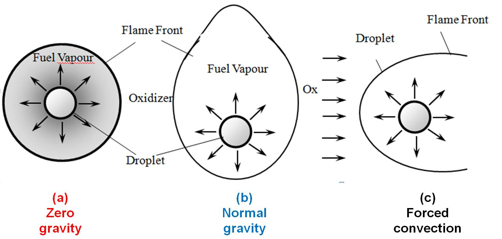
Factors affecting the shape of the flame front:
(a) Zero gravity : spherical flame front (no buoyancy)
(b) Normal gravity : elongated (due to natural convection)
(c) Forced convection condition : fame aligned with flow
Energy required to vaporize the liquid fuel (QV):
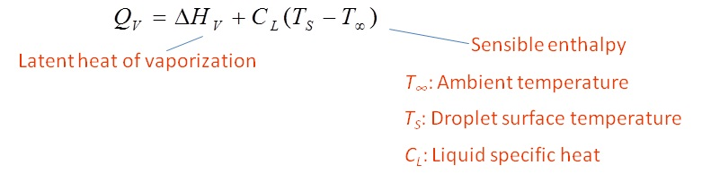
- Spherically symmetric droplet is ideal case for studying droplet combustion and describing the combustion process mathematically.
-
Steps in droplet combustion are (see figure for explanation):
- Fuel vaporizes at the droplet surface and diffuses outward.
- Simultaneously, oxidizer diffuses inward from the ambient environment.
- The fuel and oxidizer react stoichiometrically, resulting in a zone of intense non-premixed flame.
- Heat transfer by conduction and radiation occurs in two directions; outward from the flame to infinity and inward to the droplet surface. The inward transferred heat is utilized for liquid vaporization.
One dimensional model of droplet combustion
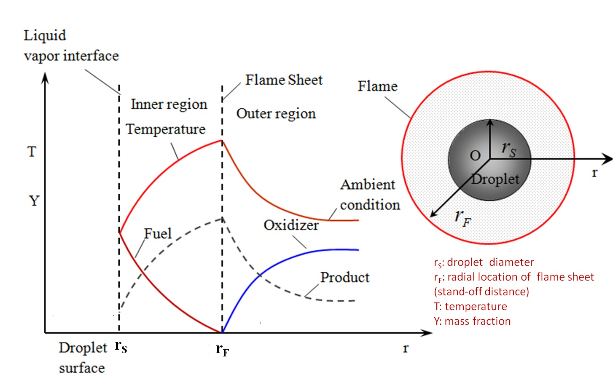-
Assumptions
- Single droplet in quiescent atmosphere.
- Temperature inside the droplet is uniform.
- Density of liquid fuel much higher than the gas phase.
- Fuel is a single component with no solubility for gases.
- Flow velocities are assumed to be low.
- Single step irreversible reaction.
- Thin flame approximation is valid.
- Constant thermo-physical properties.
- Unity Lewis number.
- Radiation heat transfer is neglected.
- No other phase is formed in the liquid fuel droplet.
D2 Law
- Mathematical description is in terms of the "D2 law". The assumptions lead to closed form analytical expressions for the droplet burning rate, flame location (standoff location from the gas-liquid interface), and flame temperature.
- Refer [1] for detailed derivation.
- Brief derivation: Using continuity equation for the rate of decrease of droplet mass,
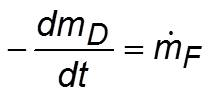
mD: mass of droplet
mF: mass burning rate of fuel
t: time
and the mass burning rate of fuel in the droplet, following expression is obtained for the rate of decrease in droplet diameter. 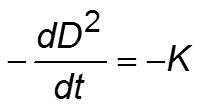 which on integration leads to the D2 law: 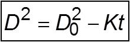 D0: initial droplet diameter
D: droplet dimeter
K: burning rate constant
- As per this model, droplet burning rate, flame stand-off location (rF), and flame temperature remain constant for the duration of droplet burning.
- We shall verify the D2 law using experimental data.

Experimental setup
Combustion Chamber
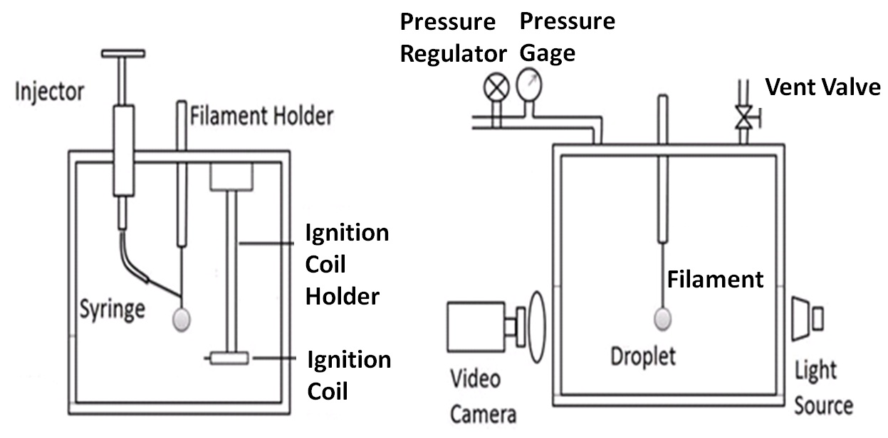
Drop Tower
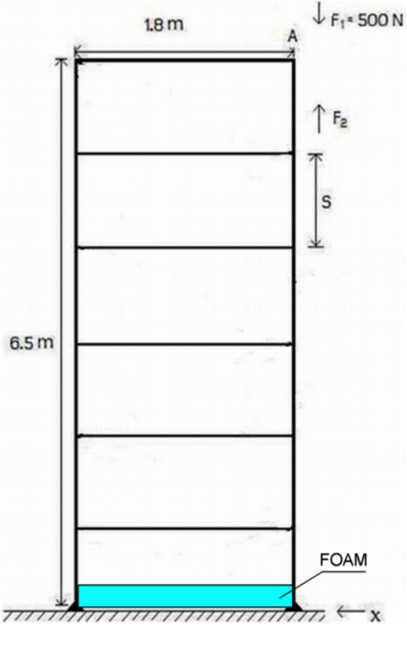
Measurement Capsule
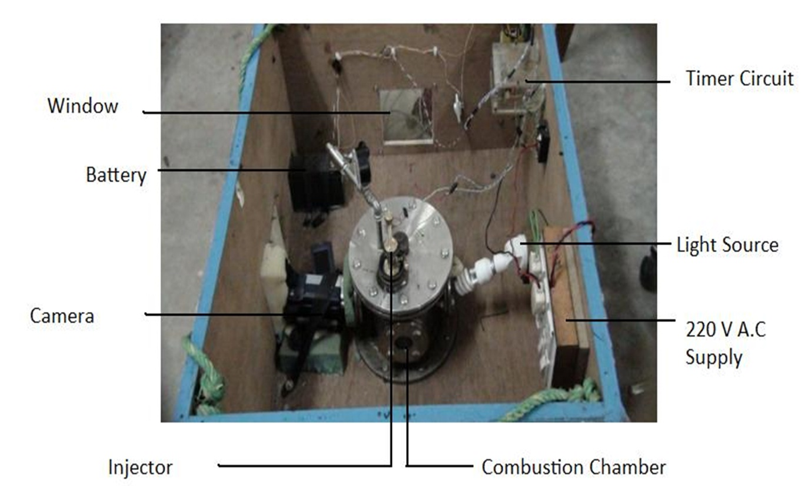
Use of Drag Shield
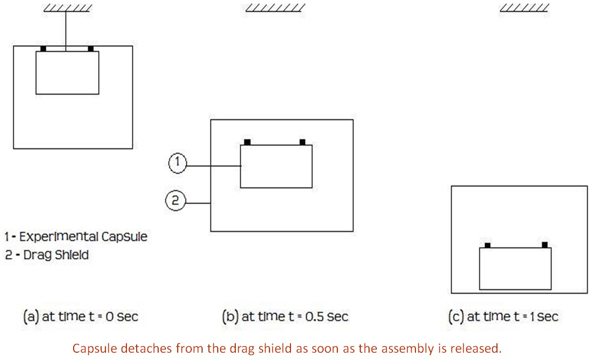
- For micro gravity experiment, the measurement time (1 s approx.) is enough to study the burning history of small diameter droplets. Hence, the corresponding height of the tower was fixed at 6.5 m giving allowance for the foundation and damping system to arrest the fall of the combustion chamber. The drop height was 5 m.
- The purpose of the drag shield is to reduce the air resistance acting on the combustion chamber and aids in achieving microgravity condition.
-
The capsule comprised of:
- The combustion chamber
- The light source (A 15 W compact fluorescent lamp)
- CCD video camera
- 12 V D.C source
- 220 V AC supply switch board
- Ignition apparatus
Imaging System
- In order to capture the droplet combustion process, backlighting was used. Luminous photography was used to study flame structure of the droplet during the entire burning process.
- A 15 W CFL bulb was placed right behind the droplet in the optical axis of the video camera to backlit the image.
- The video camera (30 fps) used is a Sony HD CCD camera with an optical magnification of 10x in order to achieve further magnification without compromising the clarity of the acquired images.
Experimental Procedure
-
For micro gravity experiments:
- Install the instruments and test chamber. Install the camera and illumination bulb.
- Lift the capsule to the required height on the drop tower (~7 m) and transfer the load onto the release mechanism. Maintain center of gravity of the load properly.
- Form the droplet on the bead of glass filament using the injector.
- Activate the imaging system and perform optical alignment.
- Heat the ignition coil for one or two seconds and then trigger the circuit using the circuit control panel.
- Activate the release mechanism as soon as the drop starts burning. Initial combustion occurs under normal gravity and subsequently under micro gravity.
- Perform image analysis to obtain droplet diameters at different time instants.
-
For normal gravity experiments:
Above procedure is followed except steps 2 and 6.

Test Conditions
- Gravity Conditions:
- 1g (normal gravity)
- 10-5g (micro gravity)
- Gauge pressure conditions : 1 bar, 4 bar, 8 bar
Luminous images of droplet combustion
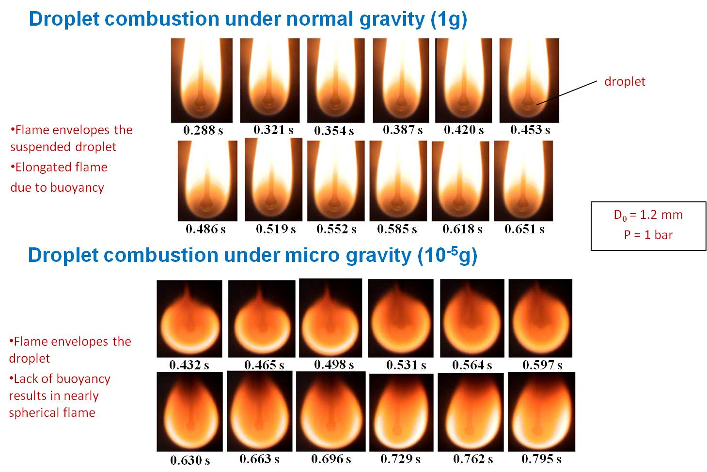
Backlit images of droplet combustion
Backlit images (shown here under 1g) reveal the receding of droplet as the burning progresses.
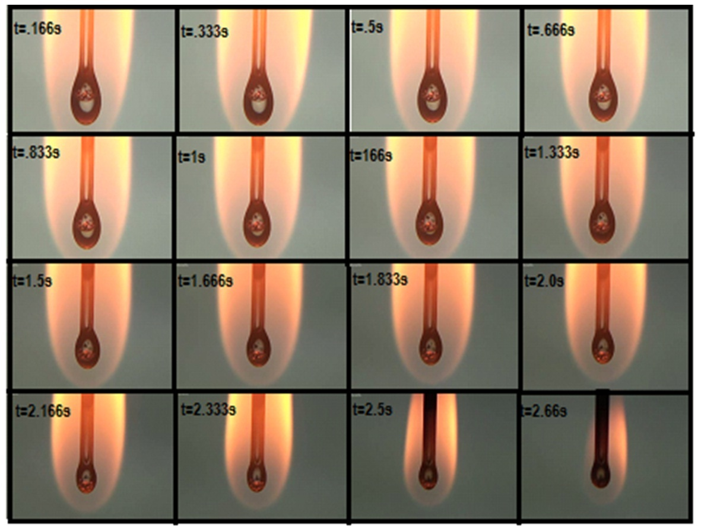
Effect of gravity on burning rate
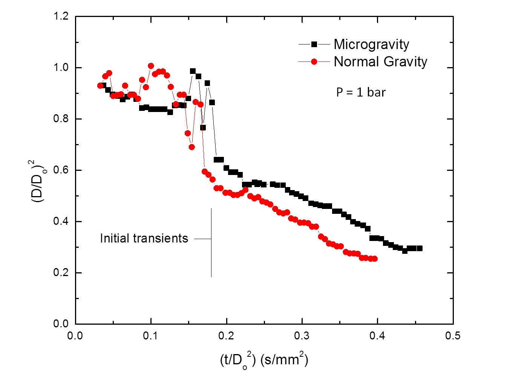
- Fluctuations in the regression of droplet diameter are due to initial transients.
- The burning rate of droplet under normal gravity is higher than that of micro gravity.
- Buoyancy under normal gravity results in increased motion of fuel vapors inside the droplet. Thus, heat transfer inside and transport of fuel vapors to the flame front is enhanced and burning rate increases consequently.
Effect of pressure on burning rate
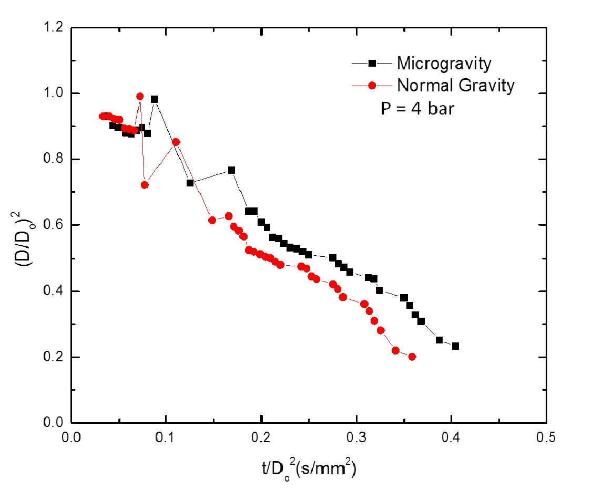
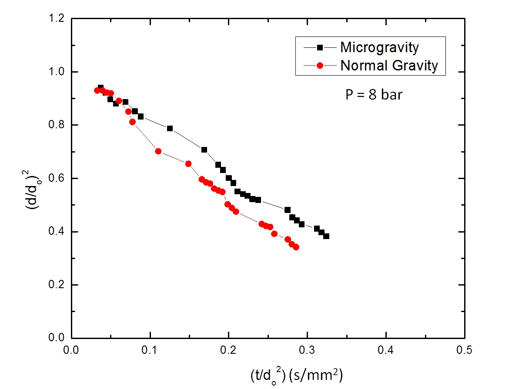
- Normal gravity droplet burning exhibits higher burning rate compared to the microgravity case due to buoyancy effects as seen in the ambient pressure case. Similar trends are observed at higher pressures of 4 and 8 bar in the above figures.
- Burning rate of droplet increases with chamber pressure due to enhanced vaporization rates and reaction rates. In case of normal gravity, increased buoyancy at higher pressure also causes enhancement in the burning rate.

- Buoyancy changes the shape of droplet and enhances the droplet burning rate in normal gravity droplet combustion in comparison to micro gravity.
- Burning rate increases at higher chamber pressure for both normal and micro gravity conditions due to enhanced vaporization rates and buoyancy effects that lead to increase in reaction rates.
- D2 law is shown to be valid even for high operating pressure and both under normal gravity and micro gravity. Good fitting accuracy was obtained since initial transients were suppressed at high pressure.

- What care should be taken in the design of combustion chamber for high pressure tests?
- What is the role of drag shield in the experiment for micro gravity?
- What is the effect of droplet holder on the combustion process?
- Sketch the instantaneous variations of temperature, fuel mass fraction and oxygen mass fraction with respect to radial position during droplet combustion.
- What will be the effect of air velocity on droplet combustion process?
- What are the important assumptions made in the derivation of D2 law?
- What might happen in case the chamber pressure is higher than the critical pressure of fuel vapors?
- D. P. Mishra, "Fundamentals of Combustion", PHI Learning Private Limited, 2010.
- D.B. Spalding, "Combustion and Mass Transfer", Pergamon, 1979.
- D.B. Spalding, "Some Fundamentals of Combustion", Butterworths, 1955.
- D.E. Rosner, "On liquid droplet combustion at high pressures", AIAA J., Vol. 5 1967, p. 163.
- S. Kumagai, T. Sakai, S. Okajima, "Combustion of free fuel droplets in a freely falling chamber", Symposium (International) on Combustion,�Vol. 13, 1971, p. 779.